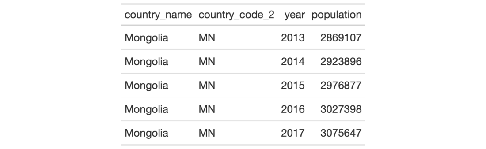

| cols_unhide {gt} | R Documentation |
The cols_unhide() function allows us to take one or more hidden columns
(usually made so via the cols_hide() function) and make them visible
in the final output table. This may be important in cases where the user
obtains a gt_tbl object with hidden columns and there is motivation to
reveal one or more of those.
cols_unhide(data, columns)
data |
A table object that is created using the |
columns |
The column names to unhide from the output display table. Values provided that do not correspond to column names will be disregarded. |
The hiding and unhiding of columns is internally a rendering directive, so,
all columns that are 'hidden' are still accessible and useful in any
expression provided to a rows argument. The cols_unhide() function
quietly changes the visible state of a column (much like the cols_hide()
function) and doesn't yield warnings or messages when changing the state of
already-visible columns.
An object of class gt_tbl.

4-8
cols_hide() to perform the inverse operation.
Other Modify Columns:
cols_align(),
cols_hide(),
cols_label(),
cols_merge_n_pct(),
cols_merge_range(),
cols_merge_uncert(),
cols_merge(),
cols_move_to_end(),
cols_move_to_start(),
cols_move(),
cols_width()
# Use `countrypops` to create a gt table;
# Hide the columns `country_code_2` and
# `country_code_3`
tab_1 <-
countrypops %>%
dplyr::filter(country_name == "Mongolia") %>%
tail(5) %>%
gt() %>%
cols_hide(
columns = c(
country_code_2,
country_code_3
)
)
# If the `tab_1` object is provided without
# the code or source data to regenerate it, and,
# the user wants to reveal otherwise hidden
# columns then the `cols_unhide()` function
# becomes useful
tab_2 <-
tab_1 %>%
cols_unhide(columns = country_code_2)